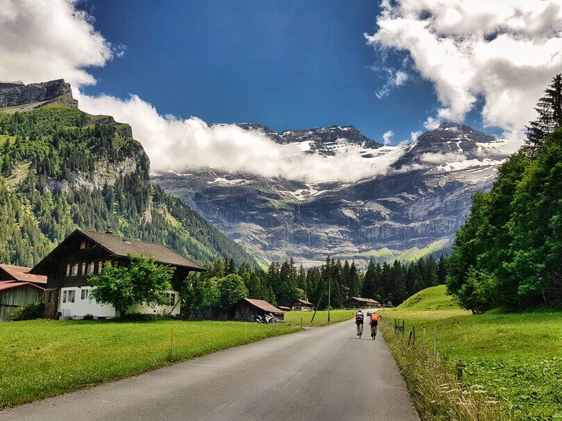

Welcome to our Blog!
Check out some of our best tips and tricks to have fun and stay safe while exploring the great state of Utah.
Nutrition and Hydration in Utah
Utah might not always look like it but it is definitely a desert where temperatures can reach upwards and around 100 degrees during the hottest parts of the day so it is absolutely essential that while visiting you drink plenty of water beforehand and are constantly staying hydrated but that while exercising, mountain biking, hiking, or anything that causes additional exertion on your body that you drink the recommended amount of liquids according to your age and weight. A common approach is while biking drinking between ½ and 1 liter of water every hour and having some form of energy gel to dip into while riding to ensure that electrolytes are replaced and exhausted energy supplies in the body resupplied.